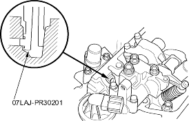
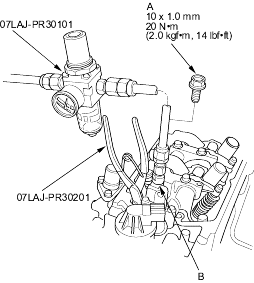
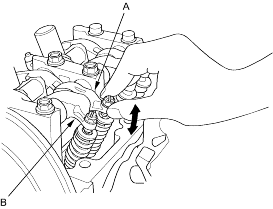

- Check that the air pressure on the shop air compressor gauge indicates over 400 kPa (4 kgf/cm2, 57 psi).
- Inspect the valve clearance (see page 6-14).
- Cover the timing belt with a shop towel to protect the belt.
- Plug the relief hole with the air stopper.

- Remove the sealing bolt (A) from the inspection hole (B) and connect the valve inspection set.

- Loosen the valve on the regulator and apply the specified air pressure:
Specified Air Pressure:
250 kPa (2.5 kgf/cm2, 36 psi)
NOTE: If the synchronising piston does not move after applying air pressure, move the primary or secondary rocker arm up and down manually by rotating the crankshaft counter-clockwise.
- Move the intake secondary rocker arm (A) for the No. 1 cylinder. The primary rocker arm (B) and secondary rocker arm should move together.
- If the intake primary rocker arm does not move, remove the primary and secondary rocker arms as an assembly and check that the piston in the secondary and primary rocker arms move smoothly. If any rocker arm needs replacing, replace the primary and secondary rocker arms as an assembly and retest.

- Remove the special tools.
- After inspection, check that the MIL does not come on.